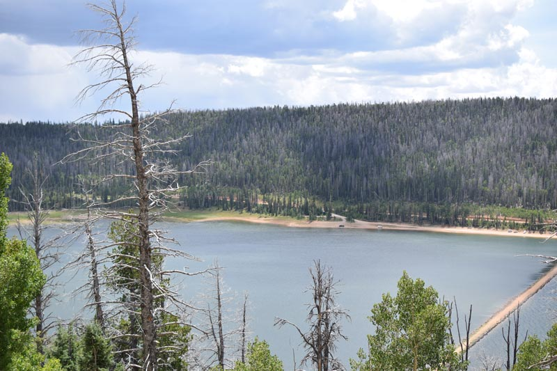

Fish Haven
Weather Summary
Currently:
High: °
Wind Speed: mph
Humidity: %
message
town 5-Day Forecast
Upcoming Events:
Little Fish Haven, Idaho, is paradise for residents
By Deseret News Dec 26, 2000, 3:35pm MST Kurt Friedemann Idaho State Journal
FISH HAVEN, Idaho — It's an undiscovered paradise. Most people who drive by recognize the raw beauty of a place ringed by high desert mountains and bordered by the shores of a vast natural lake.
In winter the hills outside this small paradise echo with the sharp whine of snow machines and in the summer thousands of tourists ply the lake's bright blue waters with water skis or fishing poles.
But they don't live there. It's different living in Fish Haven.
The little town sits just on the Idaho side of U.S. Highway 89 tucked in between Bear Lake's west side and the mountains.
It's not technically a city or a town, it's really nothing more than the proverbial wide spot in the road. But people call it a town even though there isn't a city council, just the Bear Lake County Commission that oversees development there.
Only 50 to 100 people call it home, depending on the weather.
Vic Tilt, co-owner of Gladys' Place, is one of the few year-around residents and said the population drops quickly when things get cold.
The winter evacuation isn't much of a worry for Tilt, 60, because his store is the only one around. The nearest other store is in Montpelier, about 45 minutes away.
Gladys' Place is also only a few minutes from the Utah border and has become quite a lottery spot. The little store is the third- and fourth-biggest lottery ticket seller in Idaho, selling about 500,000 tickets a year.
"We've got a whole mall in 1,000 square feet," Tilt said.
Because it is the only business in Fish Haven, Gladys' Place sells it all — liquor, groceries, videos, tourist gifts and some of the best deli sandwiches around — and also serves as post office, Gladys Tilt said.
Yep, you guessed it, Gladys' Place is 58-year-old Gladys Tilt's place. The Tilts opened the little store in April 1994 and have been steeped in tourist fun and local tradition ever since.
Before 1994 the couple had been working for a corporation in Salt Lake City.
On one of their traditional summer trips they passed through Fish Haven and fell in love with the town and Bear Lake. The couple decided to move their fifth-wheel camper trailer to the area, bought a piece of ground and parked it.
That wasn't enough.
"We were spending almost every bit of free time we had up here," Gladys said. "We heard that the store might be sold and so we decided to go for it."
They gave up everything in the city — their jobs, home, and moved to Fish Haven in just a few months.
"We sold our house for cash and moved," Vic said. "'We haven't looked back. I was born in Salt Lake City, but now you couldn't drag me back."
Since their move, Fish Haven has begun to grow up around them. It was already a small tourist spot, but since the introduction of Bear Lake West, a cabin development south of Fish Haven, things have really begun to grow.
It's the reason Ruth and Scott Stokes are now spending more of their time in Fish Haven. The Stokeses have a home in Ogden but are considering making the town along Bear Lake's western shore their permanent home.
The couple discovered the spot because Scott Stokes is a contractor and began helping a fellow builder put together cabins in Bear Lake West.
The Stokeses fell in love with the people and the atmosphere in Fish Haven.
"It's just a wonderful place to be," Ruth Stokes said. "I feel at peace here. Every time we drive up I'm just in awe."
It was good enough for Scott Stokes and his company, Scott Construction, to begin building cabins without his friend.
"It's a great place to live," he said with a smile. "I just want to help people live here."
The Bear Lake Regional Commission wants to draw people to Fish Haven as well, said Judy Holbrook, regional commission executive assistant. The commission is working to promote the area and the entire Bear Lake valley, which includes towns as far north as Montpelier.
"'We're a gateway to Yellowstone," she said. "A lot of people drive through here and we want to try and capture that tourist traffic."
But the problem now, is not drawing people to it, Holbrook said, but controlling the growth.
"We have more than 400 homes in two subdivisions around Bear Lake," she said. "We need to maintain our quality of life and at the same time encourage growth."
But for Vic and Gladys Tilt, more or fewer people in Fish Haven isn't really a concern. They're content right now.
"It's the way it is and the way it's always going to be right now," Vic said. "It will be here a long time after we're gone."
Contact Us
Address:
The Weather Center
123 Main Street
Franklin, ID 87654
Phone:
(801) 555-1234
Email:
contact@yoururl.com